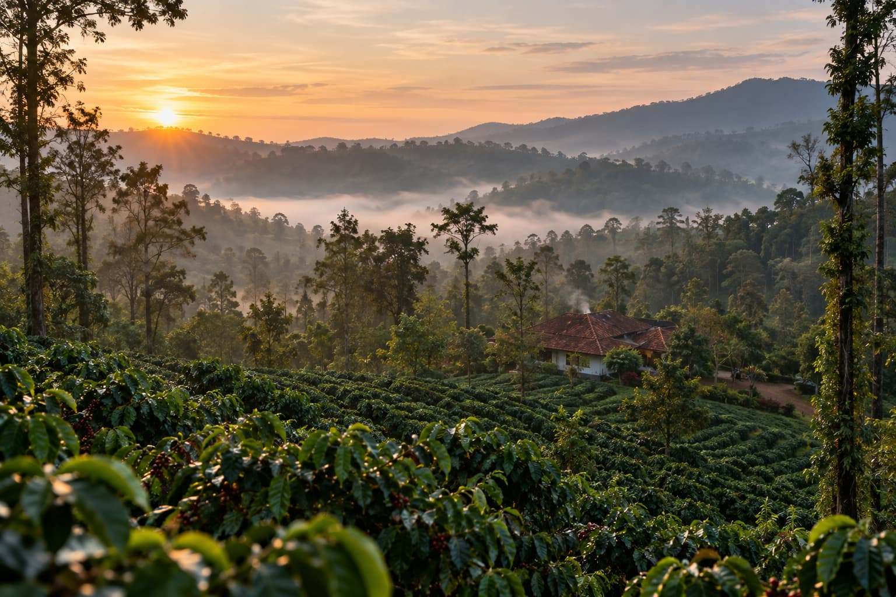
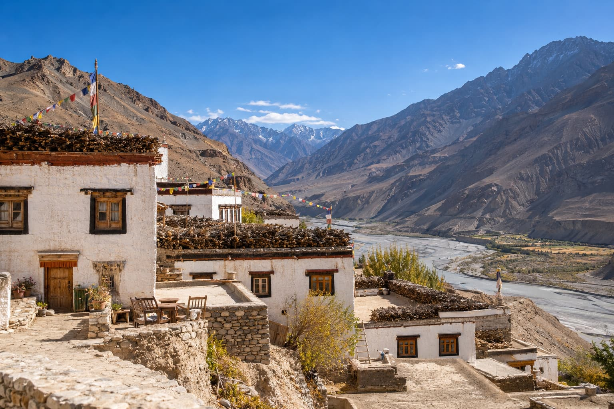
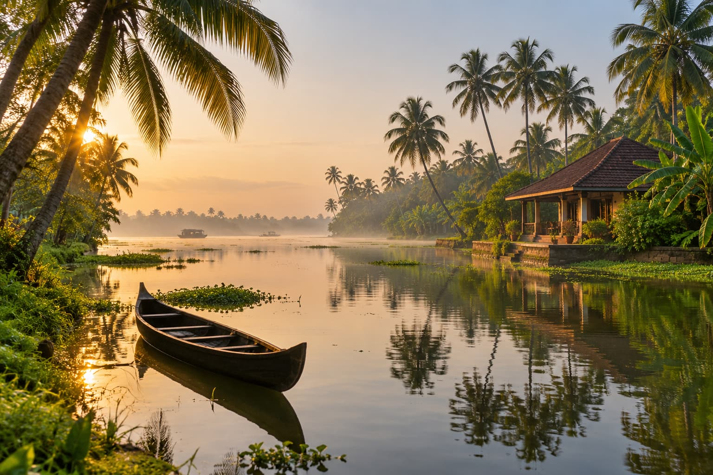
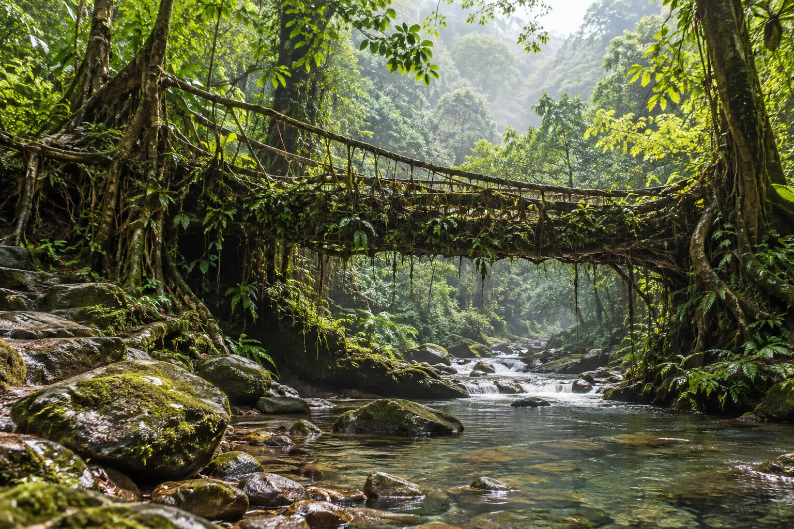
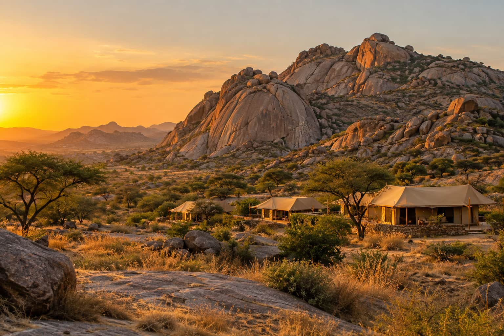
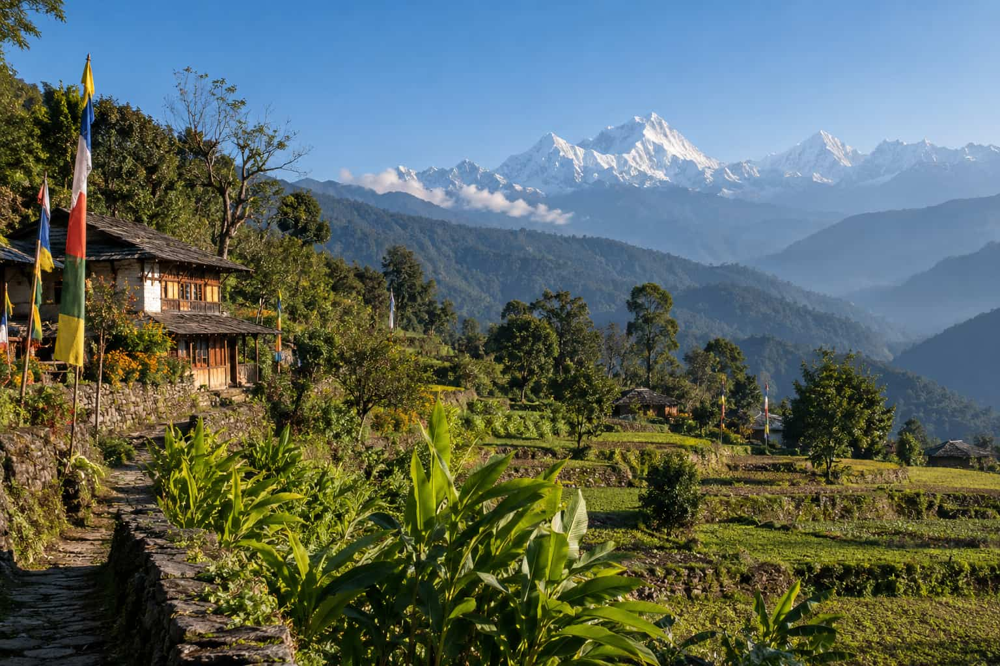

South IndiaCoorg, Karnataka
Kaapi Estate Homestay
Green Key certified, audited March 2026A family-run coffee estate homestay with plantation walks and meals cooked from the garden.
from ₹4,200 a nightCheck dates
Home / Destinations
Six regions, six certified stays
Six regions, from South India to the Himalaya and Northeast India. Each eco stay is audited by GSTC, Green Key or EarthCheck in the last twelve months. Filter by landscape, budget or what matters to you.
Showing 6 certified stays

South IndiaCoorg, Karnataka
A family-run coffee estate homestay with plantation walks and meals cooked from the garden.

HimalayaSpiti Valley, Himachal Pradesh
Mud-brick rooms heated by passive solar walls, run by a village cooperative at 3,800 metres.

South IndiaKumarakom, Kerala
A restored lakeside home with canoe tours led by local fishermen instead of diesel houseboats.

Northeast IndiaMawlynnong, Meghalaya
Bamboo cottages in a village known for its community clean-up rules and living root bridges.

West IndiaJawai, Rajasthan
Solar-powered tents among granite hills, with leopard walks guided by Rabari herders.

Northeast IndiaYuksom, Sikkim
A farmhouse in India’s first fully organic state, a short walk from the Kanchenjunga trail.
Not sure where to start? Here is how the regions compare. For examples and history, read examples of eco tourism in India.
Coffee estates in Coorg and the Kerala backwaters at Kumarakom, one of the pilot destinations of Kerala's Responsible Tourism initiative. Easy to reach, good for a first eco trip.
Village homestays in Spiti Valley and farmstays in Sikkim, India's first fully organic state. Best from May to October.
Mawlynnong in Meghalaya, known for community-led cleanliness and living root bridges, and Yuksom in West Sikkim, the start of the Kanchenjunga trail.
Jawai in Rajasthan, where granite hills, leopards and Rabari herders share the same landscape. Best from October to March.